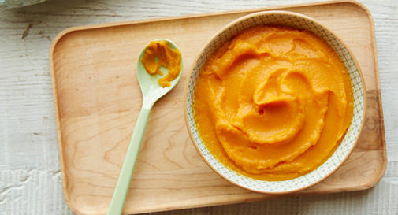
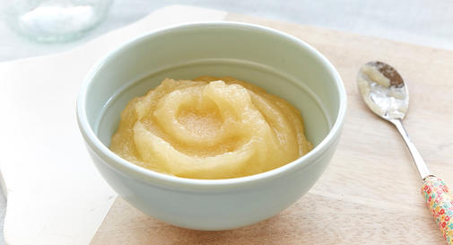
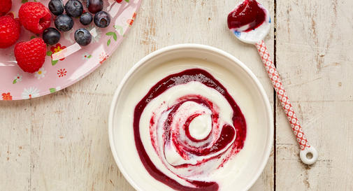

On the day you bring your newborn baby home, life as you know it changes forever. Bump Connect has put all their tips, techniques and information in one place, to help make newborn baby care as easy as possible for new parents.
What's the best way to clean your little one's eyes and ears, trim his tiny nails, deal with dry skin, and give him a bath? Find out how to clean and care for your new baby from head to toe.
Basic CareLearn more
Nose Care
The inside of the nose is self-cleaning and needs no special care. If your baby has any discharge, wipe it from the outside, but resist using cotton balls or your fingernail to try to remove it from the nostril - you might damage the nasal membranes.
Eye Care
Your baby's eyes need to be gently cleaned with a cloth every day. The best way to do this, is to:
-Wash your hands before you begin.
-Soak a cotton ball in water. Squeeze gently.
-Clean the eye, by gently wiping the cotton ball from the inside corner to the outside corner.
-Use a different clean, moist cotton ball for each eye to avoid potential cross-infection.
-Some babies don't like to have their eyes cleaned. Do make sure that the water is comfortably warm but beyond that, it's usually best to just clean quickly and move on.
Trimming your baby's nails
Cutting your newborns nails is an unpleasant job, as even the tiniest jerk from their limbs can cause a nick. To trim your baby's nails use a specially designed baby clipper with a rounded tip. For a more accurate snip, press down the baby's finger pad so the skin is not in contact with the nail clipper.
Bath time can be a fun, special experience to share with your baby. But it can also be tricky to keep your little one safe while he gets squeaky clean. Keep a few bathing tips in mind to make tub time happy and healthy.
Tips for a safe bathLearn more
(i) If using the bathroom, try steaming it first if your house is too chilly for a naked baby.
(ii) Cover your baby's exposed body parts with a warm washcloth.
(iii) Use a bath thermometer to ensure a safe temperature of around 36 degrees.
(iv)Most importantly: Never leave your baby unattended, even for a second. They can drown in less than an inch of water in a matter of seconds.
Diapering: It's a dirty job, but someone has to do it. No idea how to change a diaper? Learn how to change disposable or cloth diapers, step-by-step. Wondering how to prevent diaper rash? Find out what diaper rash looks like, how to prevent it, and how to treat it.
DiaperingLearn more
How to change a disposable diaper?
How to change a cloth diaper?
Diaper RashLearn more
What does diaper rash look like?
If your child's diaper area looks irritated and red, chances are it's diaper rash. The skin may also be a little puffy and feel warm when you touch it. Diaper rash can be mild, with just a few prickly red spots in a small area, or extensive, with tender red bumps that spread to your child's tummy and thighs.
How did my child get diaper rash?
Diaper rash can be caused by anything from your child's own urine to a new food. Here are the most likely culprits:-
Wetness:
Even the most absorbent diaper leaves some moisture on your child's skin. And when your child's urine mixes with bacteria from his stool, it breaks down into ammonia, which can be very harsh on the skin. That's why children with frequent bowel movements or diarrhea are more prone to diaper rash. Although a child left in a wet or soiled diaper for too long is more likely to develop diaper rash, any child with sensitive skin can get a rash, even if you're diligent about diaper changes.Chafing and chemical sensitivity:
Your child's diaper rash may be the result of his diaper rubbing against his skin, especially if he's sensitive to chemicals, like the fragrances in a disposable diaper or the laundry detergent used to wash a cloth diaper. It could also be that a product you're using during diaper changes irritates your child's skin.New foods:
Diaper rash is also common when your child first starts eating solid foods or tries a new food. Any new food changes the composition of the stool, but the acids in certain foods (such as strawberries and fruit juices) can be especially troublesome for some kids. A new food also might increase the frequency of your child's bowel movements. If you're breastfeeding, your child could even be having a reaction to something you ate (although breastfed children are usually less likely to get a diaper rash).Bacterial or yeast infection:
The diaper area is warm and moist – just the way bacteria and yeast like it. So it's easy for a bacterial or yeast infection to flourish there and cause a rash, especially in the cracks and folds of your child's skin. (Thrush is a type of oral yeast infection. Some children with thrush develop a yeast infection in their diaper area, too.)Antibiotics:
Children taking antibiotics (or children whose breastfeeding mothers are on antibiotics) sometimes get yeast infections because these drugs kill the healthy bacteria that keep yeast in check as well as the harmful bacteria that's causing the illness. Antibiotics can also cause diarrhea, which can contribute to diaper rash.When should I take my child to a doctor for diaper rash?
With some diligence, you should be able to clear your child's rash in three or four days without a visit to the doctor. But do see the doctor if the rash looks as though it may be infected. Signs of infection include:
-Blisters
-Pus-filled pimples
-Oozing yellow patches
-Open sores
Feeding a baby is among the top concerns new parents have. How do you know if your baby is getting enough to eat? What is the best baby early life nutrition?
BreastfeedingLearn more
Breastmilk will always be the best food for your baby. But do you know how to do it right?
Bottle FeedingLearn more
Bottle feeding your baby is more than simply adding a milk formula to a bottle and giving it to your little one. Ultimately your baby will decide which bottle you use. The first test is to see which nipple he'll take most easily. Once you determine that, you can select the bottles and bottle accessories you need.
Choosing the right nipples
Material:
You can choose silicone or latex nipples. Silicone nipples are firmer and hold their shape longer. Latex nipples are softer and more flexible but don't last as long. In extremely rare cases, babies can be allergic to latex.
Shape:
You have a choice in nipple shape – traditional, orthodontic, flat-topped, or ones with grooves and a shape that mimics a natural nipple. Orthodontic nipples are designed to accommodate your child's palate and gums, and this type has a flat bulb on the side that touches your child's tongue. Flat-topped nipples have a more realistic shape.
Age range, size, and flow:
Nipples are available in a range of sizes and flow speeds for babies at all stages of infancy. If you're bottle-feeding a newborn, buy the smallest size in a variety of types, and let your baby determine which nipple he prefers.
When to replace nipples:
Formula or breast milk should drip steadily out of the nipple. If it pours out in a stream, the hole is too big and the nipple should be replaced. Quickly check nipples before each use for signs of wear, such as discoloration or thinning, and replace worn ones, which could break and become a choking hazard.
Choosing the right bottles
Material:
You can choose between plastic, glass, stainless steel, or a hybrid style that features a glass bottle inside a plastic or silicone sleeve. Plastic bottles are unbreakable but do deteriorate, so you need to replace them regularly. Glass bottles never need to be replaced as long as they don't break, chip, or crack. But they're heavier and may be harder for your baby to hold.
When you make your own baby food, you can use fresh food that's on hand and know exactly what you're feeding your baby. Luckily, it's easy and even fun to make your own. To introduce solids, blend smooth purees for your new eater. After a few months of practice, as your 8- to 10-month-old explores more textures, soft mashes will hit the spot. And by 10 to 12 months, your baby may be ready to tackle some finely chopped bites and chunky textures.
All About Baby FoodLearn more
Choose the right equipment
You'll need a tool to grind or puree food for your baby. Possibilities range from an electric baby-food maker to a good old-fashioned fork:
A blender or food processor
Some parents like them, but others find them too cumbersome and don't like the amount of cleanup required for small jobs.
A hand blender
This handheld electric gadget purees food like a blender, but works in the opposite way: You place it into the food rather than vice versa.
A hand-turned food mill with different blades for various textures of food. Many parents say this portable, non-electric gadget is their favorite tool.
A fork
This ubiquitous piece of cutlery is all you need to transform easily mashed foods such as baked sweet potatoes, avocados, and bananas into a meal for your baby.
Serving & Storage Tips
From adding flavor to freezing leftovers, here are some extra pointers for making baby food:
Serve the food no warmer than body temperature.
Use caution if you heat meals in the microwave. Microwaves heat unevenly and can create "hot spots" – areas of the food that are much hotter than others – so be sure to stir microwaved food well and let it sit for a few minutes before serving.
Dish out only the amount of food you think your baby will eat at that feeding. You'll need to toss what's left over because your baby's saliva will get into the mixture and make it easy for bacteria to grow in the food.
Don't sweeten your baby's food. Babies don't need any extra sugar. And never use honey, which can cause botulism – a potentially fatal form of food poisoning in babies.
Use seasonings. Despite the tradition of feeding babies bland food, they can tolerate and enjoy different flavors.
Refrigerate leftovers in an airtight container and use them up within a couple of days. You can also freeze leftovers in ice cube trays or similar devices. After the cubes are frozen solid, remove them and store in plastic freezer bags. Fruits and vegetables frozen this way will last six to eight months. Meat and fish will last one to two months.
Sweet Potato PureeLearn more
 Ingredient:
1 small (250 g) sweet potato, peeled and cut into 1-inch (2.5-cm) pieces
Preparation:
1. Place the sweet potato pieces in a saucepan and fill with enough cold water to cover. Bring to a boil over medium-high heat, then reduce the heat to medium-low and simmer until the sweet potato is very tender when pierced with a fork, about 20 minutes.
2. Drain in a colander, reserving some of the cooking liquid, and let the sweet potato cool slightly. Puree in a blender or food processor until the texture is right for your baby. To make it thinner, add cooking liquid, water, breast milk, or formula.
3. Refrigerate the puree in an airtight container for up to three days, or freeze for up to three months.
Storage tip: Spoon into ice-cube trays for single servings that are easy to thaw.
Apple & Pear SauceLearn more
 Ingredients:
1 apple, such as Pink Lady
1 ripe pear
Preparation:
1. Peel, quarter, and core the apple and pear. Cut the apple and pear into bite-sized chunks. In a saucepan fitted with a steamer basket, place the apple chunks. Pour in about 1 inch (2.5 cm) of water. Place the pan over medium-high heat, cover, and bring to a boil.
2. Steam the apple for 2 minutes, then add the pear chunks. Continue to steam, stirring occasionally to help cook evenly, until the fruit is very tender, about 10 minutes longer.
3. Remove the pan from the heat and remove the steamer basket. Transfer the steamed fruit to a blender or food processor and let cool. Process the fruit to a very smooth or chunky puree, depending on your baby's age and chewing ability. If needed, add a little water or breast milk to thin the puree.
4. Refrigerate the puree in an airtight container for up to three days, or freeze for up to three months.
Storage tip: Spoon into ice-cube trays for single servings that are easy to thaw.
Yoghurt & Berry SwirlLearn more
 Ingredients:
1 cup (125 g) fresh or thawed frozen blueberries
1 cup (125 g) fresh or thawed frozen raspberries
Plain whole-milk yogurt, for serving
Preparation:
1. Combine the blueberries and raspberries in a blender or food processor and process to a smooth puree. Strain through a fine-mesh sieve into a small saucepan.
2. Place the saucepan over medium heat and bring to a simmer. Simmer until the berry puree begins to thicken, about 5 minutes. Transfer to a bowl and let cool completely, stirring occasionally. (The berry puree can be covered and refrigerated for up to three days.)
3. When ready to serve, add some yogurt to your baby's bowl and, using a spoon, swirl in a few spoonfuls of the berry puree.